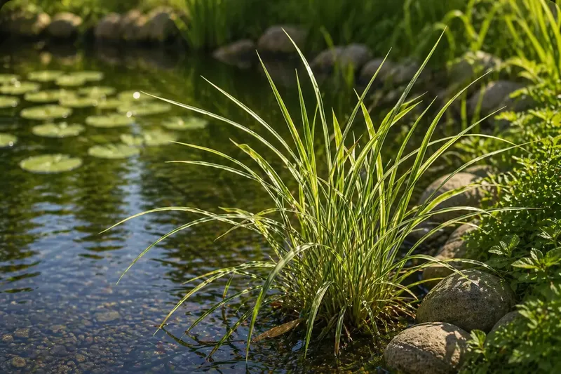

Растения для пруда
Осока
Цена и наличие
- P916 BYN / шт.В наличии
Данные на 23.11.2026.
Характеристики
- Преимущества
- Улучшает качество воды, укрепляет берега, неприхотлив
- Период цветения
- Май-июнь
- Размер листьев
- 30-100 см
- Размер цветков
- 2-10 мм
- Размер корневища
- 10-30 см
Описание
Осока для пруда – это многолетнее растение, которое идеально подходит для создания естественного и гармоничного водоема.
Осока для пруда – это многолетнее растение, которое идеально подходит для создания естественного и гармоничного водоема. Она обладает привлекательным внешним видом, с длинными узкими листьями, которые могут варьироваться по цвету от светло-зеленого до темно-зеленого, а иногда даже иметь оттенки красного или коричневого. Осока не только украшает пруд, но и выполняет множество полезных функций, которые делают её незаменимым элементом любого водоема. Одним из главных преимуществ осоки является её способность поддерживать чистоту воды. Она эффективно предотвращает рост водорослей, которые могут затенять воду и ухудшать её качество. Осока действует как естественный фильтр, поглощая излишки питательных веществ, таких как азот и фосфор, которые способствуют цветению воды. Это помогает поддерживать здоровый баланс экосистемы пруда и улучшает качество воды. Осока также создает благоприятные условия для обитания различных водных организмов. Её густые заросли служат укрытием для мелких рыб и насекомых, защищая их от хищников и предоставляя им место для размножения. Кроме того, осока является источником пищи для многих водных обитателей, что способствует увеличению биоразнообразия в пруду. Еще одно важное преимущество осоки – это её способность укреплять берега пруда. Корневая система осоки проникает глубоко в почву, предотвращая эрозию и разрушение береговой линии. Это особенно важно для прудов, расположенных на склонах или в местах с нестабильной почвой. Осока помогает сохранять форму пруда и предотвращает обрушение берегов. Осока неприхотлива в уходе и способна адаптироваться к различным условиям. Она может расти как на солнечных, так и на затененных участках, и выдерживает широкий диапазон температур. Осока также устойчива к временным затоплениям и засухам, что делает её отличным выбором для прудов в различных климатических зонах.